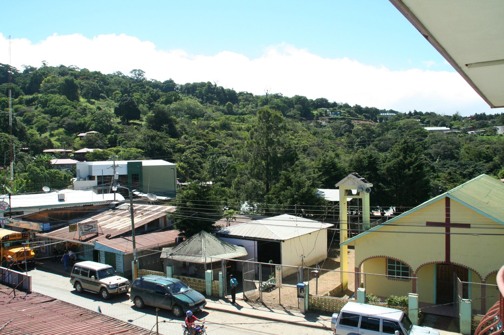
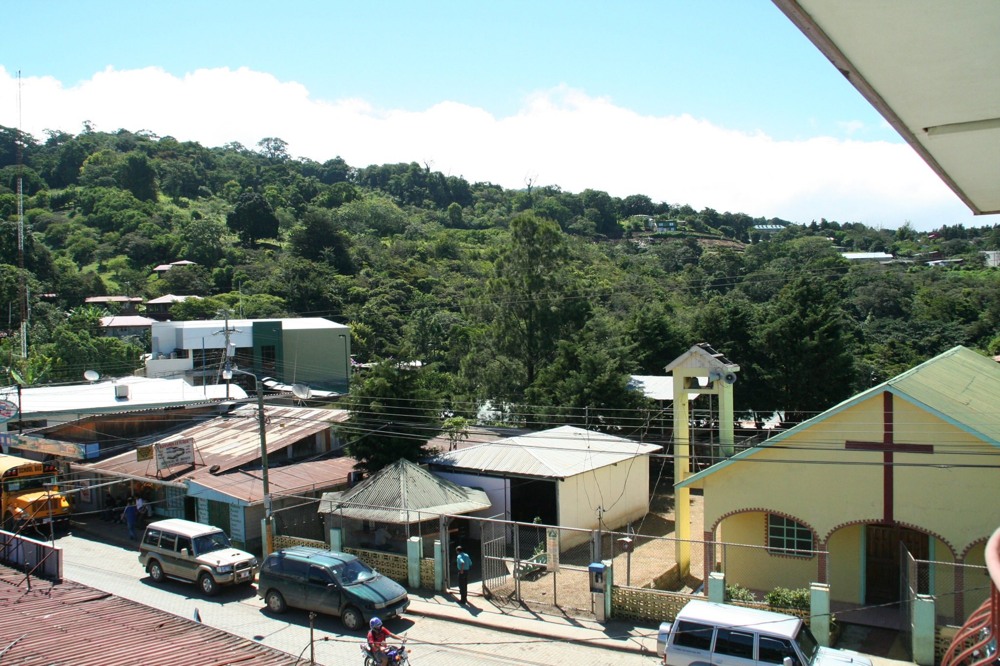
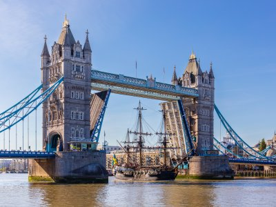

Chiangmai, Thailand


Geographical Location: Asia
Chiang Mai, nestled in the lush hills of northern Thailand, is a city that captivates with its unique blend of cultural richness and natural beauty. Situated approximately 700 kilometers north of Bangkok, Chiang Mai is the largest city in the region and serves as the capital of the province of the same name. Its geographical location is nothing short of enchanting, surrounded by forested mountains and picturesque landscapes. This charming city, often referred to as the "Rose of the North," offers visitors a delightful escape from the bustling urban life, inviting them to explore a realm where tradition meets modernity amidst a backdrop of stunning scenery.
The heart of Chiang Mai beats with a rich history that dates back over 700 years. Founded in 1296, the city was originally the capital of the ancient Lanna Kingdom. Today, remnants of its storied past are scattered throughout the city, from the ancient temples that dot the landscape to the preserved city walls and moats that harken back to a bygone era. Among the city's treasures is the revered Wat Phra Singh, a 14th-century temple known for its intricate architecture and revered Buddha image. Chiang Mai's historical sites provide a captivating glimpse into its heritage, making it a destination that seamlessly weaves together the past and present for visitors to explore and appreciate.
Photo Gallery

You can see hot balloons in Chiang Mai as well.

You can see cute elephants in Chiang Mai! Isn’t that fun?!

There are so many beautiful temples in Chiang Mai.

Be respectful to the monks.

And don’t forget to treat yourself with delicious Thai food!
Monteverde, Costa Rica
 

Geographical Location: North America
Monteverde, Costa Rica is situated 4,662 feet above sea level. Monteverde’s famed cloud forests are the byproduct of fog (a thick, low-hanging cloud) tangling amongst the leaves and branches of the forest canopy. Trails and hanging bridges offer a close-up view of the diverse variety of animals and plants living in the forest.
One of the main tourist locations in Monteverde is the town of Santa Elena, which is not only home to a variety of restaurants with delicious food, but a serpentarium as well. You can enjoy hiking, ziplining, and observing the native wildlife while staying in Monteverde. It’s a truly beautiful place.
Photo Gallery

You can hike trails and zipline through the Monteverde cloud forests.

Hanging bridges over the cloud forests allow for a birds-eye view.

You can visit hummingbirds at Monteverde’s Selvatura Park’s hummingbird garden, which exhibits over 14 different species of hummingbird.

El Tigre Waterfalls is made up of four falls, which are connected by trails and hanging bridges.
London, United Kingdom


Geographical Location: Europe
As one of the most iconic cities in the world, London carries a rich history that is matched by its continuous growth and evolution. A powerhouse of culture, politics, and finance, it stands as a city where the past and present exist harmoniously side by side. From the ancient towers that narrate tales of a regal past to modern architectural marvels that reach for the skies, London offers an unrivaled blend of history and modernity.
As a global financial powerhouse, London's skyline is adorned with both historic landmarks and contemporary skyscrapers, symbolizing its economic prowess. The city's green spaces, including Hyde Park and Regent's Park, provide a tranquil escape from the urban hustle. London's multicultural identity is evident in its neighborhoods, each offering a unique flavor of cuisine, art, and lifestyle. From the regal Buckingham Palace to the trendy streets of Shoreditch, the city caters to a broad spectrum of interests.
Big Ben stands tall as a testament to London's historical grandeur, its chimes echoing tales of times gone by.
The Tower Bridge, a symbol of engineering marvel and historical significance, stretches across the River Thames with its iconic twin towers.

The Victoria and Albert Museum in London is the world's largest museum of applied arts, decorative arts and design, housing a permanent collection of over 2.27 million objects.

King's Cross Station, more than just a transport hub, is a symbol of London's continuous evolution, and the magical lore associated with it beckons to fans of literature and adventure alike.